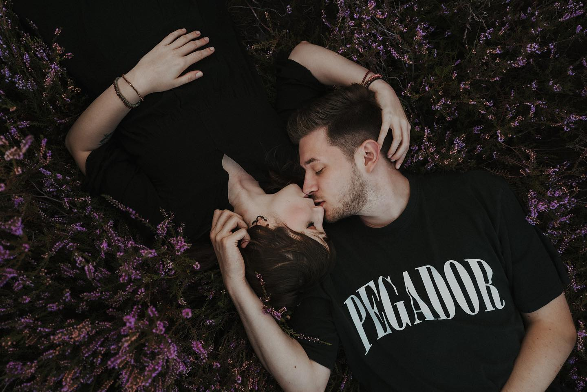
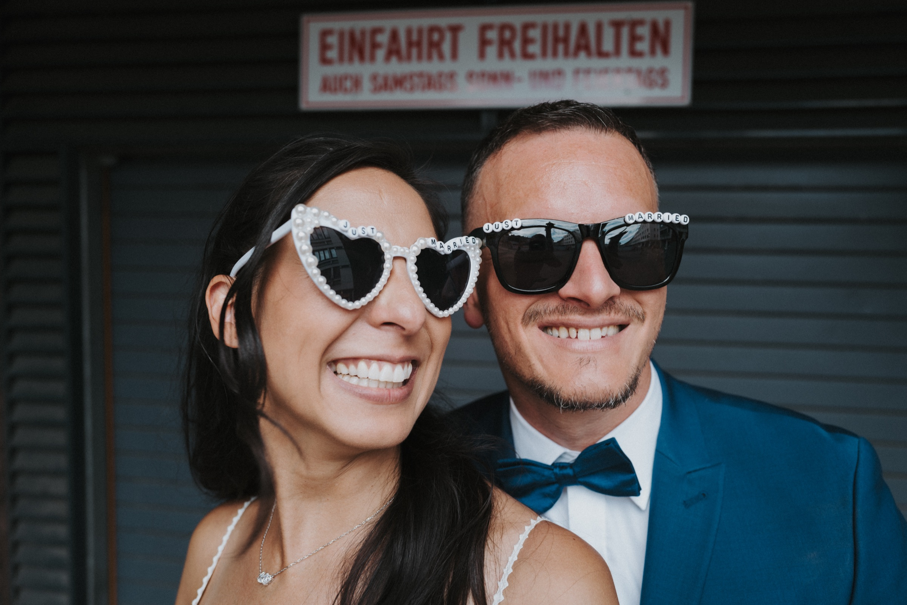
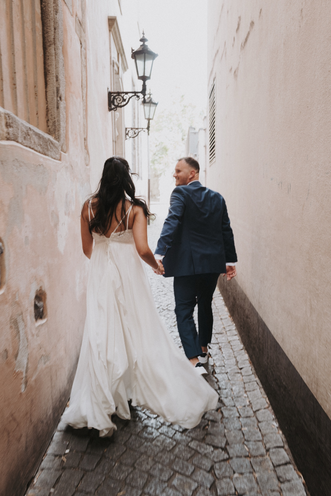
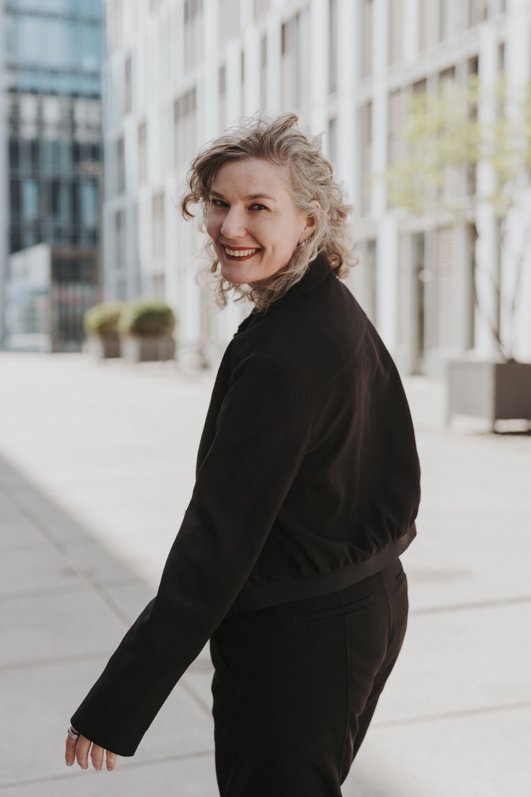
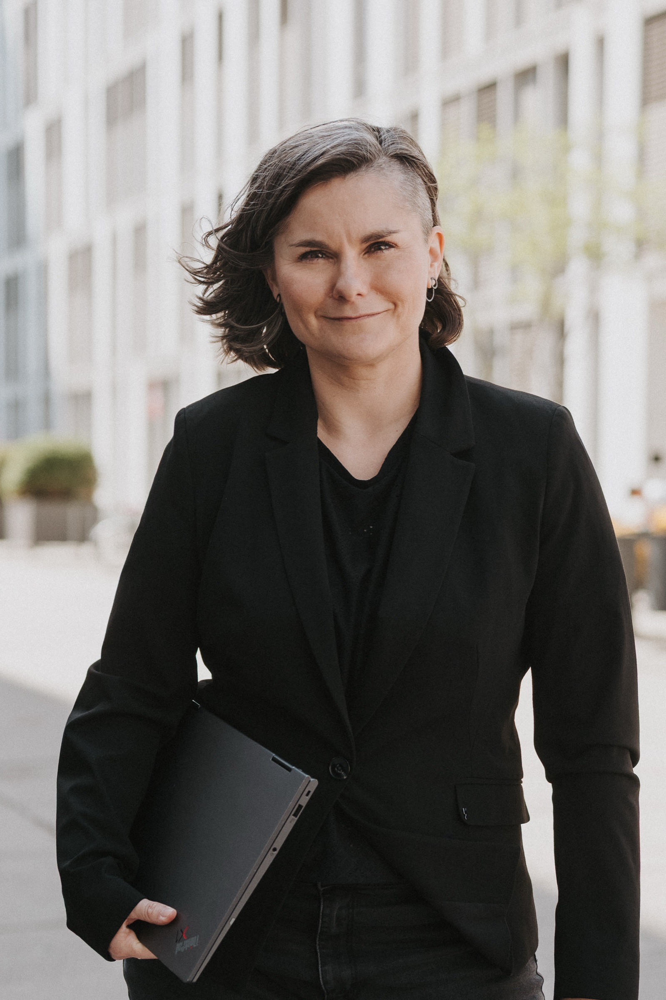
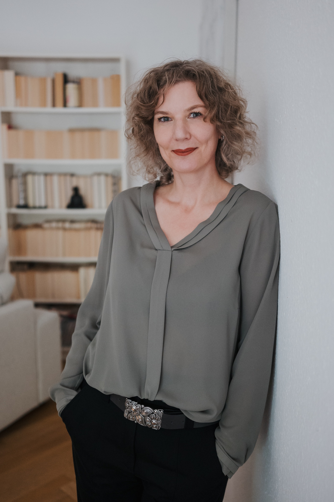
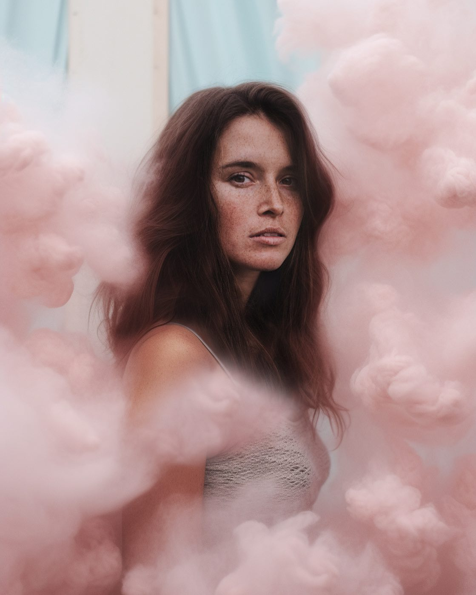
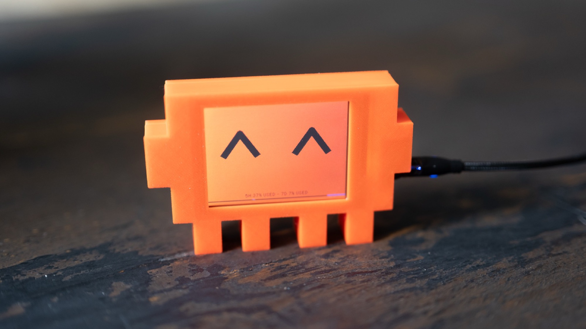
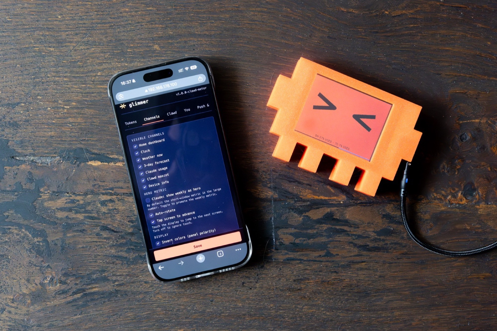

Senior Creative — Fotograf seit 2010 — 100% Liebe, 10% Einhornglitzer
Portraits, Hochzeiten und Kampagnen — und Creatives für Marken wie TEDi, Huawei und E.ON. Analog im Blick, digital im Werkzeug.
Arbeiten ansehen












Hi, ich bin Dennis!
Senior Creative Designer bei Mawave — und seit 2010 Fotograf mit Sitz in Köln.
Hinter der Kamera gilt meine Leidenschaft den Menschen: Portraits, Hochzeiten und Business-Fotografie, die echte Momente festhält statt gestellter Bilder.
Als Creative entwickle ich Konzepte und Creatives für Marken wie TEDi, Huawei und E.ON — von Social Media über Motion Design bis zu KI-gestützten Bildwelten und Workflows. Davor habe ich über zehn Jahre als Artdirektor und Team Manager Design-Teams aufgebaut und geführt.
Was mich antreibt: verschiedene Kunstformen zu verschmelzen — analog und digital, Handwerk und KI — und daraus Dinge zu bauen, die es so noch nicht gab.
Kreative Leitung von Key Accounts, Entwicklung und Umsetzung kreativer Konzepte und Creatives mit und ohne KI, Mentoring von Designer:innen. Projekte u.a. für TEDi, Huawei und E.ON.
Portraits, Business- und Hochzeitsfotografie. Über 15 Jahre hinter der Kamera, durchgehend parallel zur Arbeit im Design.
Teamleitung Creative und Paid Social: fachliche und disziplinarische Führung, Strategiesessions und Kundenworkshops, kreative Leitung mit Fokus auf Konzeptentwicklung, Storyboarding und Art Direction für B2B- und B2C-Kampagnen.
Vom Junior Art Director zum Team Manager: Führung der Teams Video Content Creation und Social Media Design, von Konzept und Storyboard bis zur plattformübergreifenden Umsetzung in Animation, Film und Social.
Digital Design für die Kosmetikmarke Babor.
Ausbildung zum Screendesigner bei der antwerpes ag, anschließend Designer und Junior Art Director im selben Haus.
Dennis Gall
Am Godorfer Kirchweg 20
50997 Köln, Deutschland
+49 176 61 61 86 76
Auftragsanfragen bitte per E-Mail